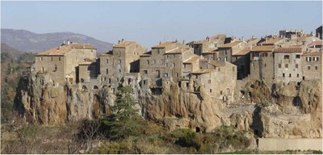
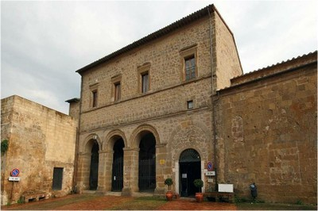

Tuff [SPTU]
Tuff is an igneous volcanic rock made up of rock and mineral fragments that are compacted with volcanic ash. In general, the grain size of the ash is below 4 mm (above 4 mm: volcanic breccia). The colour of tuff is variable (and strongly depends on its weathering and chemical composition), but it is mostly greyish, brown, or yellow It is a low-density, high-porosity rock that is often soft and porous and can therefore be scratched by metal objects. It is a relatively soft stone and it has been widely used for masonry construction in regions where it is available (e.g. Italy, Armenia, etc.).

Tuff stone blocks, Italy (A. Benedetti)

A view of Sovana, Italy - most buildings are built using tuff masonry and the city was built on a tuff cliff (http://ilcasale1742.it/en/)

Tuff stone was used for the construction of Bourbon del Monte Palace (16th century), Sovana, Italy (www.fototoscana.it)

Tuff stone used in modern wall construction, Italy (A. Benedetti)

A wall built using dressed tuff stone exterior wythe over a rubble masonry in San Giuliano damaged in the 2002 Molise earthquake, Italy (A. Benedetti)

Tuff stone masonry in Algiers, Algeria was affected by the 2003 Boumerdes earthquake (M. Farsi)